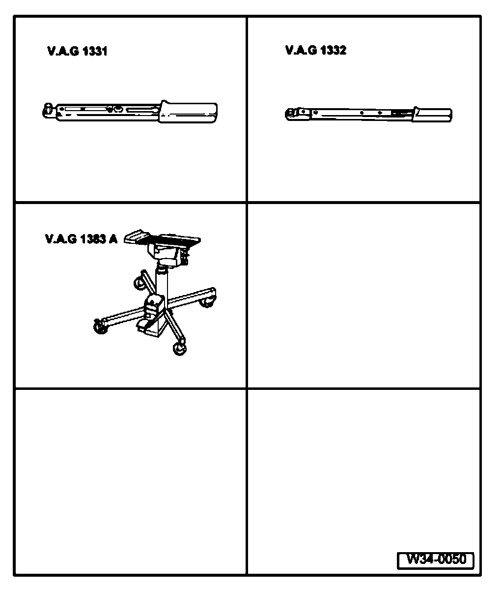
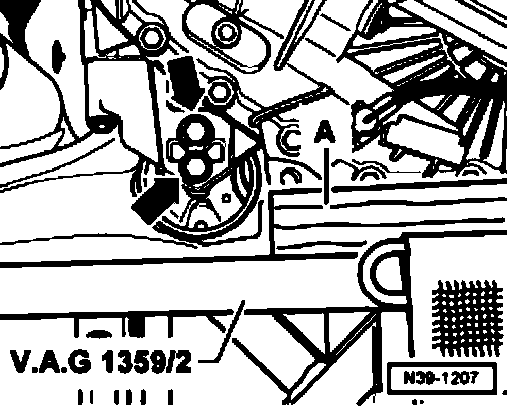
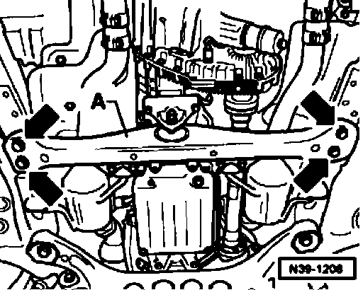
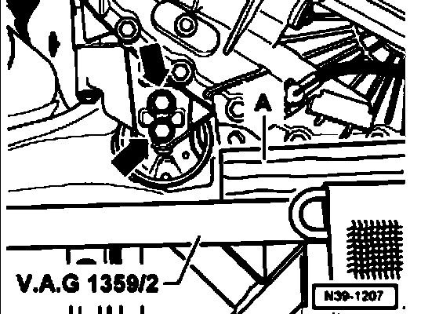
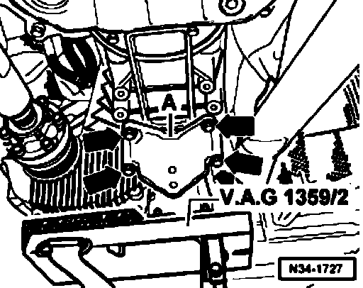
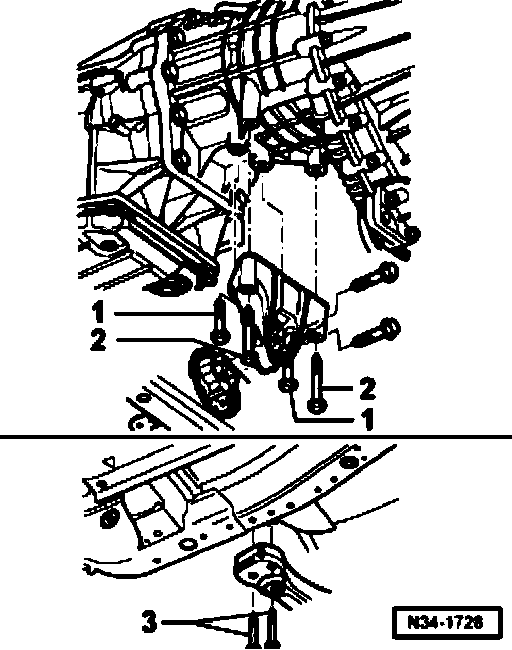
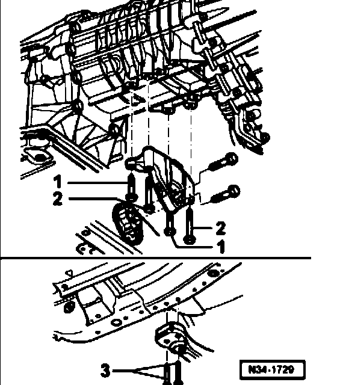
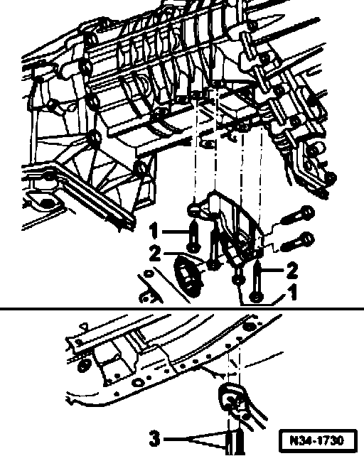

Transmission Support and Console, Removing and Installing
Transmission support and console, removing and installing
Special tools, workshop equipment, test and measuring appliances and auxiliary items required

^ V.A.G 1331 Torque wrench
^ V.A.G 1332 Torque wrench 40-200 Nm
^ V.A.G 1383 A Engine/transmission jack with universal transmission support V.A.G 1359/2
Removing
- Raise vehicle.
- Remove noise insulation below transmission.

- Place engine/transmission jack VAG 1383 A with universal mounting 1359/2 and a wooden block -A- under transfer case.
Note: Do not loosen bolts (arrows).

- Unbolt transmission support -A- from body (arrows).
- Lower transfer case slightly, until transmission support hangs free.

- Then unbolt transmission support from transfer case console (arrows).

- Unbolt console -A- from transfer case (arrows).
Installing
Installation is performed in the reverse order.
Tightening torques
Console to transmission support 50 Nm + 90°
Always replace bolts
Note:
^ Due to the various engine options and differing lengths of the transfer case extension, there are various consoles and transmission supports. Allocation depends on the engine installed.
^ The various options result in the following bolting points for console to transfer case and transmission support to body:

Vehicles with 12-cylinder engine
Console to transfer case
Bolts-1-M8 x 35 20Nm
Bolts -2- M8 x 7020 Nm
Transmission support to body
Bolts -3- M 10 x 80 50 Nm + 90°
Always replace bolts

Vehicles with 6 or 8-cylinder engine
Console to transfer case
Bolts-1-M8x35 20Nm
Bolts -2- M8 x 70 20 Nm
Transmission support to body
Bolts -3- M10 x 80 50 Nm + 90°
Always replace bolts

Vehicles with 5 or 10-cylinder engine
Console to transfer case
Bolts-1-M8 x 35 20 Nm
Bolts -2- M8 x 70 20 Nm
Transmission support to body
Bolts -3- M10 x 80 50 Nm + 90°
Always replace bolts